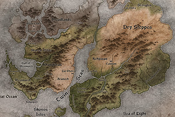 Светът на Светилището никога не е едно и също, тъй като някои части (с изключение на градовете, забележителностите и някои куестове) се генерират на случаен принцип. Подобно на части от пъзел, те се комбинират, за да образуват лабиринти и подземия, за да могат да се различават всеки път, когато играете играта. Всеки път, когато стартирате играта или смените героя си, светът се променя. Ще откриете непознати противници и неотворени съндъци на нови места. Още повече, че физическото оформление на зоните се променя, локацията на пещерите и руините могат да са на различни места, а добре познатия маршрут, по който вече сте минавали, може да е затрупан с чудовища.
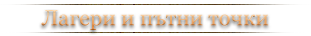
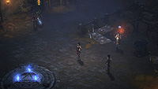 Не всички части от света ще се менят под краката Ви. Безопасни зони – като лагерите и градовете – ще се запазят непроменени. На тези места ще срещате продавали, с които да търгувате и поправяте екипировката си. Ще срещнете вашите последователи и други ключови персонажи. Когато кликнете на тях, можете да започнете диалог с тях и да ги попитате за съвет или да научите за тяхната история.
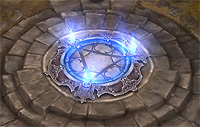 В градовете ще видите гравираната магическа емблема на земята – подобни емблеми ще срещате и на други места пръснати в Светилището. Те се наричат пътни точки (waypoints) – магически кръгове за телепортация из света, които можете да използвате, за да пътувате от точка до точка. На Adventure mode всички пътни точки са автоматично разкрити, докато на Campaign mode трябва първо да ги намерите.
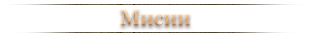
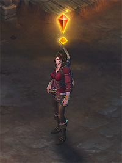 Мисиите, още познати като Quests, са историята на Diablo III и вашата битка срещу Ада.
Можете да видите списък с пълното описание на вашите мисии, както и накъде трябва да се запътите, чрез вашия Quest Log (за PC използвайте бутона „J”) .
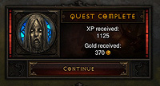 Мисиите предоставят награди като злато, опит и предмети. Някои мисии имат бонус задачи, с които можете да си докарате допълнително опит и злато. Обикновенно мисии ще Ви бъдат възлагани от най-приближените Ви съюзници, но понякога и самата околна среда ще Ви предостави различни предизвикателства, като да убиете определен противник.
Ако искате да играете историята на играта отново, можете да използвате бутона Reset Quests от Game Settings менюто. Ще започнете отново от Акт 1 и всичките Ви мисии и пътни точки ще бъдат заличени.
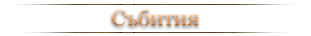
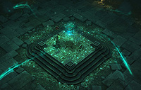 Когато пътувате из света на Diablo, по пътя си ще срещнете събития – малки частици геймплей, подобно на миниатурни мисии. Тези събития и необходимите задачи за изпълнения ще бъдат изписани на екрана Ви.
Събитията са демонични ритуали, вражески засади, пещери пълни с гладуващи затворници и други предизвикателства на случаен принцип по пътя Ви през главната история на играта.
Много от събитията могат да Ви възнаградят с допълнителни богатства.
THE INFERNAL MACHINE
Адски чудовища могат да се забележат в света на Светилището. Победете тези създания и можете да спечелите артефакти, които ще отключат врати към скрити местности от Ада. Слуховете са, че най-дяволските шампиони пребивават в тези тесни светове. Когато нахлуете в скривалищата им и ги победите, можете да се сдобиете с техните телесни части – некротични органи, които могат да се използват за изковаването на предмети с несравними сили.
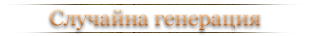
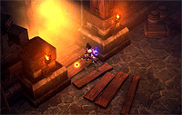 Случайната генерация на Diablo III подобрява преживяването Ви при преиграване, но запазването на прогреса Ви също се управлява по специален начин.
Не е необходимо ръчно да запазвате прогреса си, за да може да продължите от там, където сте приключили предишния път. Статуса на играта Ви (включително натрупания Ви опит, събрани предмети и приключени мисии), ще се запазват автоматично по време на напредването Ви в играта и разкриването на пътни точки. Прогресът Ви се запаметява и всеки път, когато излезнете от играта през “Leave Game” и “Exit Game” бутоните, затова е важно да затваряте играта си всеки път по този начин.
Ако затворите играта си посредата на подземие или сред дивата околност, следващия път, когато влезнете в играта, героят Ви няма да се появи точно на същото място. Той ще се появи на последната пътна точка или най-близкото безопасно място – обикновено в град наблизост или лагера Ви. За да се върнете на мястото на вашата последна битка, можете да го направите, като използвате пътните точки (waypoints).
Винаги можете да разкривате света по свое усмотроение, но знайте, че трябва да сте внимателни, за да можете да намирате пътните точки, с които да се предвижвате из света на играта по-ефикасно.
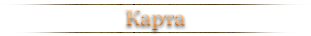
Когато влезнете в нова зона, картата Ви ще бъде празна. Разкривайки зоните, тя ще започне да се оформя.
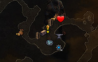 Ако се загубите, можете да отворите цялата карта с бутона “M” или “TAB” за PC, за да придобиете представа за околноста и накъде трябва да потеглите. Зоните, които не сте разкрили, са недостъпни на картата Ви, докато не ги разкриете. Ако забележите пулсиращ кръг на картата си, той индикира посоката, в която трябва да вървите, за да достигнете до мисията си.
На PC ще виждате и мини карта на екрана си за бърза навигация.
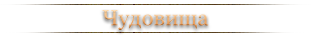
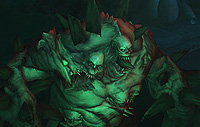 Много и най-различни чудовища се крият в света на Светилището, които ще се опитат да Ви убият по най-различи начини. Някои хвърлят киселина или предизвикват урагани към вас, други ще се нахвърлят по вас, надявайки се да Ви разкъсат преди да сте могли да реагирате.
Като допълнение към огромното разнообразие от „обикновени“ чудовища, ще срещате и някои специални типове създания.
- Шампиони: Те са в син цвят, както и имената им на бара за живот, появяват се в групи от 3 до 6. Друго характерно при наименуването им е, че те се казват точно така като е името им като обикновени чудовища. Например Mallet Lord група ще се нарича “Mallet Lord”, просто ще е в син цвят.
- Редки: това са чудовища с жълти имена и най-често са придружавани от слуги със сребърни имена, които са като обикновените единици. Групата от слуги като вид най-често е спрямо дадена зона в която се намирате в Кампанията или Приключенският режим (Adventure mode), но в Greater рифтовете повечето пъти са на случаен принцип. Характерното за редките елитни чудовища е името им, което е съставено от две части; Първата част на името е някаква заигравка (шега), а втората част е име на митични чудовища книгите като Zarhym, а Lylirra и Nevalistis са Community Manager-и, които работят за Blizzard.
- Уникални: Те се различават от жълтите елити с това, че имената им се изписват с лилаво. Важно е да знаем, че уникалните чудовища винаги са един и същ вид, а също така и винаги на една и съща локация — например Chiltara винаги ще е Lacuni Huntress и ще се намира във второ ниво на пещерата Caverns of Frost, която се намира във Fields of Slaughter на Акт 3. Уникалните чудовища също така имат и рядък шанс да се появят както например Chiltara или Keywarden-ните, но също така в това число попадат и всички видове босове в играта. (Кампания, Приключенски режим - всички босове от кампанията, от Nephalem или Greater рифтовете се водят Уникални елитни чудовища.
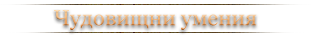
Отдолу ще намерите списък с всички чудовищни умения – уникални сили, които ще срещнете при битка с чудовищата. Повечето от уменията ще разпознаете по текста изписан под имената на чудовищата или по визуалните ефекти по време на битка.
- Desecrator (Fire): Представлява огнен кръг по земята, който се пуска под краката на играча и може лесно да бъде замаскиран ако има Plagued афикс и това може да бъде смъртоносна комбинация, ако имаме и Jailer affix, който може да Ви заключи за няколко секунди в Desecrator петното.
- Frozen Pulse (Cold): тази ледена топка ще Ви преследва докато не Ви догони. Най-лесният вариант за избягване е да я изчакате да дойде до вас и да се дръпнете преди да е почнала да пулсира.
- Molten (Fire): елитите оставят след себе си огнена следа, която е изключително неприятна за меле героите, но за стрелците не е голям проблем. Също така трябва да внимавате след като убиете такъв елит, защото той експлоадира!
- Mortar (Fire): За разлика от Molten афикса, този е по-лесен за избягване от меле героите и наистина много неприятен за стрелците. Този афикс представлява огнената топка, която бива изстреляна в близост до дадената цел, а също така се появява за всяка изстреляна топка оранжево кръгче, което обозначава мястото на импакта. Най-лесното избягване на тази механика е да седите възможно най-близо до чудовището, което има този афикс, но пък трябва и да се пазите да не Ви ударят особено ако са меле чудовища.
- Plagued (Poison): това са големи зелени "локви", които се появяват по земята и ще изчезнат единствено, когато убиете елитната група. Доста полезен трик е да седите до ръба на отровните "локви" особено ако сте в тясно пространство по този начин те ще стакват и няма да "залеят" толкова бързо мястото на битката.
- Thunderstorm (Lightning): това е един от може би най-неприятни афикси на елитите, той се пуска върху играч, като за кратко време преди да се активира се появява синьо кръгче, а почти веднага след това в този кръг пада мълния. Трябва непрекъснато да се движите, за да имате шанс да избегнете удара на мълнията.
- Arcane Enchanted (Arcane): може да го определим като лазер или лъч, който нанася огромни поражения. При първоначално пускане е една малка лилава точка, а след това се издължава и започва да се върти на 360 градуса преди да изчезне. За да избегнете пораженията, трябва да използвате умения или да маневрирате около лазерите, а най-добрият вариант е ако имате амулет, който да Ви дава имунизация срещу Arcane елемента. Друг интересен факт, е че пораженията са най-големи в началото на лазера, когато е бил само една малка лилава точка.
- Frozen (Cold): това са ледени топки, които експлоадират и ако сте в обсега Ви замразяват. Принципно може да стоите в тях до експлозията, но пак ще поемате поражения, които не са никак малки.
- Orbiter (Lightning): това е топка от светкавици, която трябва да избягвате и не е толкова трудно да го направите. Също така може да стоите между две такива и няма да е проблем. Старайте се да не преминават през вас. Те се движат на случаен принцип, но не са бързи, което ви дава достатъчно време да избегнете сблъсък.
- Poison Enchanted (Poison): това е отрова, която се появява по земята и се движи като оформяща се "пътечка" във формата на кръст. При всяко поставяне на нова такава "пътечка" старата изчезва, а също така може да седите в един от ъглите и по-този начин имате най-добър шанс при пускането на нова тя да не тръгне към вас.
- Electrified (Lightning): това са заряди от светкавици, които се разпръскват навсякъде, но все пак технически може да се избегне сблъсък с тях. В повечето случаи стоим и поемаме поражения, защото иначе трябва непрекъснато да се движим, а това значително ни намалява пораженията над елитите.
- Jailer: лилавият затвор, самата механика е следната - Вие бивате затворен в лилаво кръгче за няколко секунди и в комбинация на това, че Ви обездвижва и нанася сериозни поражения си представете, че сте и в неизгодна позиция заради друг афикс, което води в повече случаи до смърт.
- Knockback: Обикновените Grotesque-ки имат това умение, като самото то не Ви причинява поражения, а само Ви изблъсква назад. В редки случаи дори може да Ви спаси, но също така може да Ви изкара от обсег или да Ви запрати на място, където определено няма да се чувствате комфортно.
- Nightmarish: това умение също не Ви причинява поражения, а само Ви кара да се чувствате уплашен и да търчите в произволна посока. Докато сте под въздействието на това специално умение не може да правите нищо. Доста неприятно е, когато Ви закара направо в мелето или върху някой друг афикс.
- Teleporter: Определено най-досадното и смъртоносно умение за комбиниране. Само по себе си не нанася поражения, но ако самото чудовище има charge или също притежава телепортация става наистина неприятно, а в комбинация с някой неприятен афикс, като Jailer, Fire chains и друго, става изключително смъртоносно умение.
- Vortex: това умение Ви засмуква към чудовището, което го има. Механиката му може да се избегне ако сте през врата или го стреляте през стена (говорим дори и за Waller (този афикс Ви пуска стени) афикс).
- Waller: на кратко това са стени, които се пускат в повечето случаи по две в П-образна форма, а когато са три, едната задължително е в посока на играча. Също така могат да спират и всяко умение подобно на Poison Dart (умения, с които стреляме и те трябва да преминат разстояние за да ударят целта), но например DoT (damage over time) магиите и меле атаките нанасят поражения от другата страна на стената.
- Wormhole: на земята се образуват два лилави портала подобни на Jailer афикса. Когато попаднете на някой от тях то той ще ви телепортира до другият портал. Важно е да знаете, че той не нанася поражения, а също така може да го използвате в определени ситуации и да Ви спаси живота.
- Avenger: когато убиете един от групата то другите порастват и стават по-силни, като последният останал притежава силата на всичките. За предпочитане е да ги убиете по възможност заедно, в противен случай се пригответе за доста избягващи тактики.
- Fast: те са по-бързи, техните нормални атаки са по-бързи, а също така се пускат и по-бързо и техните специални умения.
- Fire Chains: Това може би е най-несправедливото специално умение. Всяко чудовище от елитната група е свързано с огнена верига, която причинява огромни поражения. Най-сигурният начин за избягване е да не заставате между чудовищата.
- Health Link: Елитната група споделя един общ живот, и когато убиете един от тях, то вие премахвате много или изцяло живота и на другите единици от елитната група.
- Horde: пригответе се за повече слуги от нормалното, които ще защитават Rare шампиона, а на всичкото отгоре означава, че ще има два пъти повече специални умения. (те ще са със същият брой умения, с които са нормална елитна група, но понеже са повече на брой, ще пускат повече пъти специалните си умения).
- Illusionist: всеки един от елитната група, който притежава това специално умения ще може да се "клонира" между 3 и 5 пъти. "Клонингите" (копията) имат по-малко кръв и издръжливост, но са напълно еднакви като оригинала и също така ще пускат специалните умения.
- Missile Dampening: това е купол от синя енергия, която забавя всички projectiles умения. Винаги стойте максимално близко до елита ако Ви го позволява - така ще нанасяте много поражения.
- Reflects Damage: ефекта се активира през определен период и когато е активен той не спира поемането на поражения, но поражения рефлективат и по вас.
- Shielding: това е един зелен или прозрачен балон, който обгръща даден елит и му служи за щит. Докато е в този щит, Вие не може да нанесете никакви поражения.
- Juggernaut: Елитите по-бързо генерират резистенция към Crowd-control умения, като Stun, Freeze, Immobilize и т.н, което ги прави имунизирани към тези умения.